登录地址: http://www.aa-visa.com/projects
登录界面如下，要求输入登录名，密码： 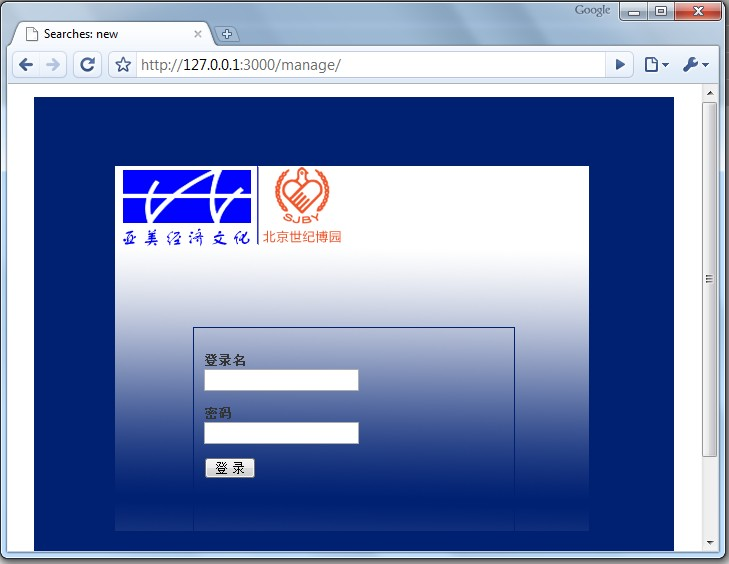
为了安全起见，需要手动退出后台，直接右上角菜单点击“退出”按钮： 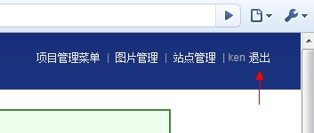
网址: http://www.aa-visa.com/manages/new
往往不需要添加太多的管理员用户，不过如确实必要，可以进入相以上网址添加。 *注意: 1.请记住登录名和密码，一旦创建概不修改 2.如果忘记密码，可以联系技术支持 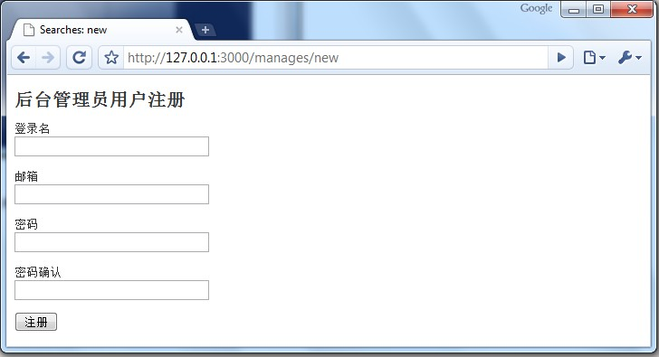
网址: http://www.aa-visa.com/projects
网站的所有管理菜单都在项目管理菜单下完成，每个栏目对应前台的栏目，栏目下添加的文章在前台相应的栏目下显示。 注意： 1。初始的栏目管理菜单都是根据前台需求设计出来的，不能够删除，否则前台会出现一些不对称。 2。可以无限添加更多的栏目，在相应的栏目下添加文章。 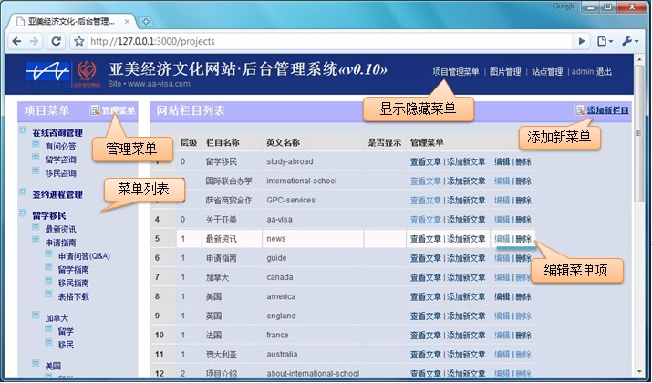
1。涉及到的后台界面如下：
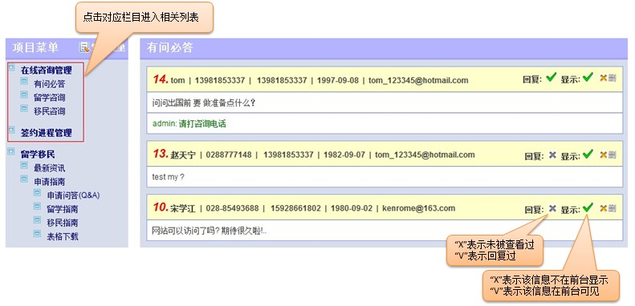 2。息编辑界面如下： 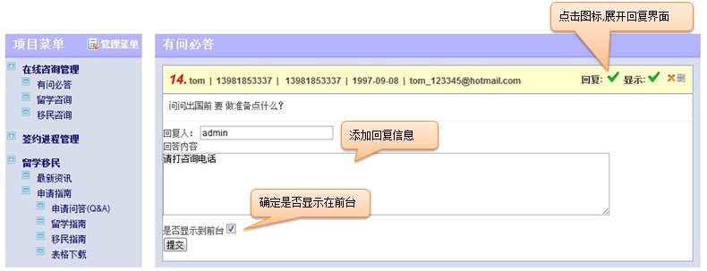
3。进程管理界面：
网址: http://www.aa-visa.com/photos
可以为每篇文章添加图片，图片的大小控制在1MB范围内，程序会自动将图片缩放为约定的大小 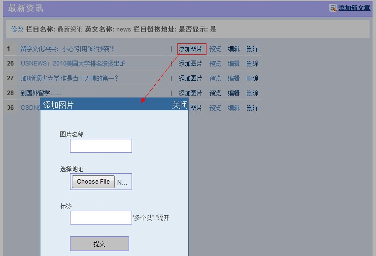
添加了图片后，在文章中显示出的效果如下： 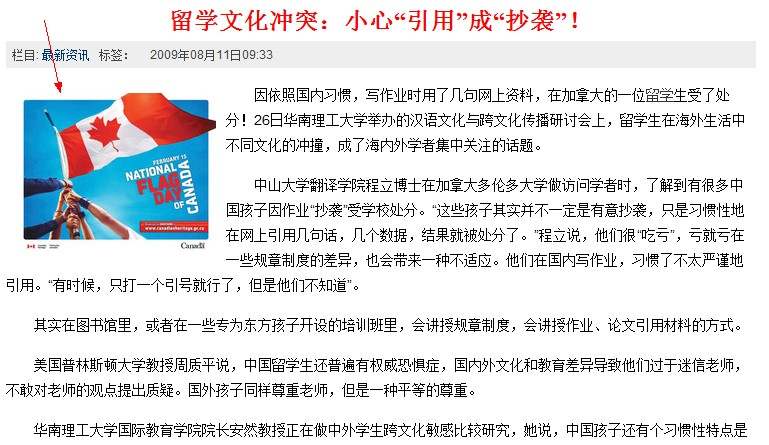
网站设计了一个活动图集管理栏目，为活动图集添加图片效果如下： 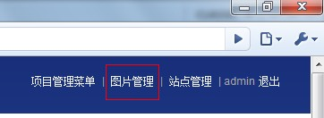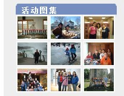 管理活动图集： 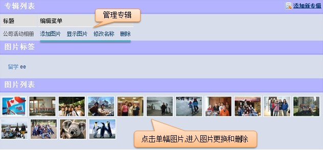 编辑每幅图片： 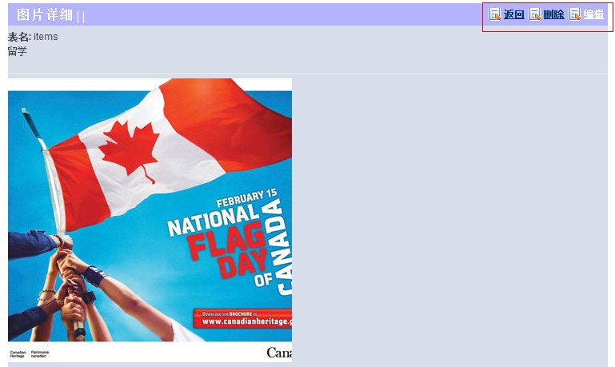
添加文章: http://www.aa-visa.com/items/new
每个栏目下都可以添加对应的文章，栏目文章列表如下：
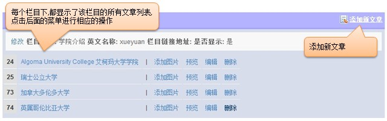
添加文章的时候，须选择相应的栏目。 也就是说每篇文章都必须下属于一个栏目：
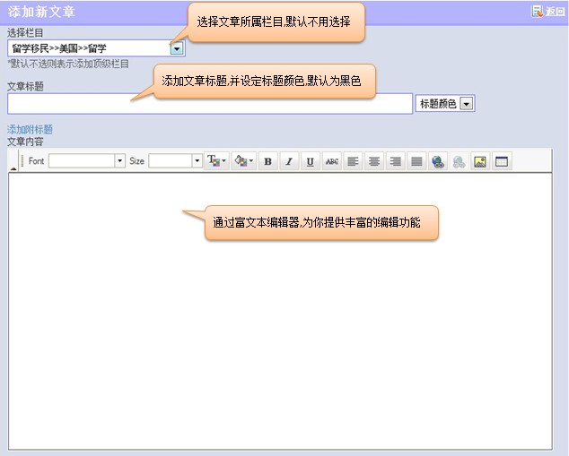 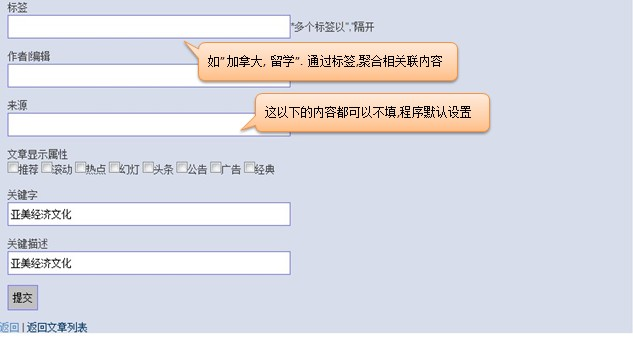
在修改文章的时候，增加了几个字段，并提供了更强大的功能：
技术支持：宋学江 15928661802 kenrome@163.com QQ:77632132 agile web developer
返回前台 | 返回后台